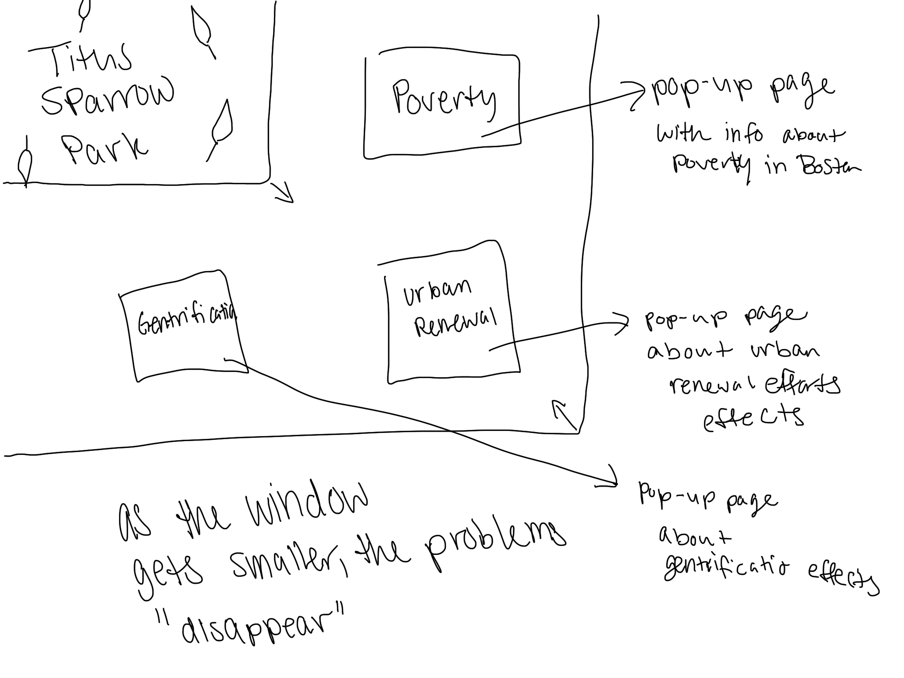

My original idea for the site layout. I ended up running into a bunch of technical problems when trying to implement this and decided to start to go with another idea from scratch. This layout would make it so that if the viewer resized the window it would reveal more pieces of information. My other idea started to make more sense when I took my content in the direction of having the viewer search for hidden history of the park.